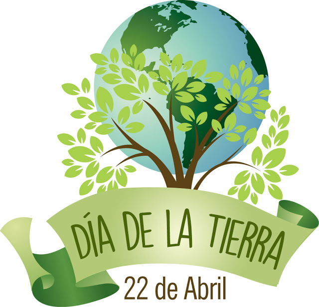
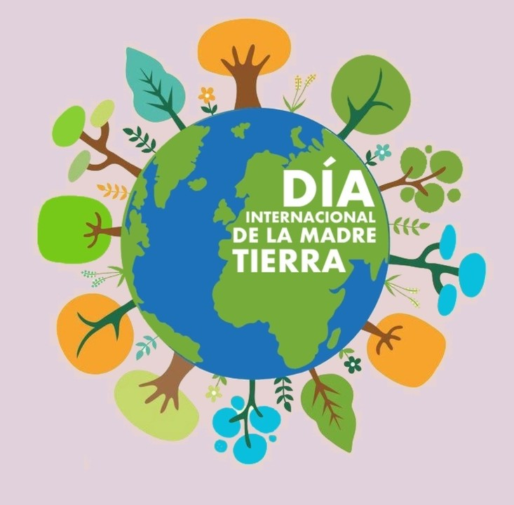

🌱 Conmemoremos el Día de la Tierra
El Día de la Tierra es una oportunidad para reflexionar sobre nuestro impacto en el planeta. Desde 1970, millones de personas alrededor del mundo se han unido en esta fecha para promover la sostenibilidad, proteger la biodiversidad y luchar contra el cambio climático.
 ¿Por qué es importante celebrar el Día de la Tierra?
🌿 Nuestro planeta enfrenta desafíos ambientales críticos: deforestación, contaminación de los océanos, pérdida de especies y calentamiento global. Este día nos recuerda que cada acción cuenta, y que juntos podemos construir un futuro más verde y justo para las próximas generaciones.
Promover energías renovables, reducir el consumo de plástico, conservar el agua y proteger la vida silvestre son pasos fundamentales que cada uno de nosotros puede tomar. ¡Cada pequeño esfuerzo suma!
Pequeñas acciones que generan grandes cambios
- ♻️ Recicla papel, plástico, vidrio y metales siempre que puedas.
- 💡 Ahorra energía apagando luces innecesarias.
- 🚲 Usa medios de transporte sostenibles como la bicicleta o el transporte público.
- 🌱 Planta árboles en tu comunidad o apoya proyectos de reforestación.
- 🛍️ Reduce el consumo de productos de un solo uso.
Con cada elección diaria, podemos contribuir a un mundo más sano y resiliente.
Un poco de historia...
El Día de la Tierra fue impulsado por el senador estadounidense Gaylord Nelson, quien quería crear conciencia pública sobre los problemas ambientales. El 22 de abril de 1970, más de 20 millones de personas se manifestaron en calles, parques y auditorios en defensa del planeta. Hoy en día, más de 190 países celebran este día con actividades que promueven la protección ambiental.
Desde campañas de limpieza de playas hasta conferencias internacionales sobre cambio climático, el espíritu del Día de la Tierra sigue creciendo y evolucionando.
"La Tierra no es una herencia de nuestros padres, sino un préstamo de nuestros hijos." - Proverbio indígena